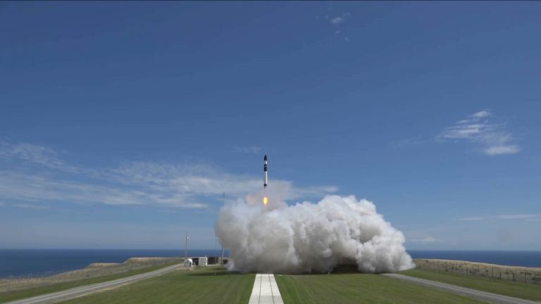

I’ve mentioned in several episodes now, humanity is in a bit of a transition period, a time when it makes sense to launch material up and out of Earth’s gravity well into orbit, and beyond. But it’s really expensive, costing up to $10,000 per pound you want in orbit, and 10 times if you want it on the Moon. But over the coming decades, more and more of our space-based infrastructure will be built in space, manufactured out of materials that were mined in space.
The only thing that’ll actually need to leave the Earth’s clingy gravity well will be us, the humans, the tourists, wanting to visit all that space infrastructure.
Of course, in order to achieve that space future, engineers and mission planners will need to design and construct the technology that will make this possible.
That means testing out new prototypes, technologies and methodologies for mining and space-based manufacturing.
This is an example of the kind of telecommunications satellite that’s regularly launched into space. The size and shape of its solar panels are dependent on the reality that Earth’s gravity… sucks. Any spacecraft built needs to be able to handle the full gravity down here on Earth, throughout the testing phase.
Then it needs to be able to handle the brutal acceleration, shaking and other forces of launch. Once it reaches orbit, it needs to unfold its solar panels into a configuration that can generate power for the spacecraft.
The James Webb Space Telescope being placed in the Johnson Space Center’s historic Chamber A on June 20th, 2017. Credit: NASA/JSC
As always, I just need to say the words, James Webb Space Telescope, to put you into a state of panic and dread, imagining the complexity and origami precision that needs to happen more than a million kilometers from Earth, in a place that can’t be serviced.
Artist Illustration of TESS and its 4 telescopes. Credit: NASA/MIT
Artist concept of the Transiting Exoplanet Survey Satellite and its 4 telescopes. Now, take a look at this artist’s illustration of a satellite whose solar panels were built entirely in orbit, never experiencing the rigors of Earth gravity. They’re comically, hilariously large. And as it turns out, efficient and cost effective.
Imagine the International Space Station with solar panels that were three times longer, but still perfectly strong and stable in the microgravity environment of low-Earth orbit.
This is the technology that Made in Space’s Archinaut One will be testing out as early as 2022, bringing us one step closer to that space-based manufacturing that I keep going on about.
In July, 2019, NASA announced that had awarded $73.7 million dollars to Made In Space, a 3D manufacturing company based in Mountain View, California.
Illustration of Archinaut One with its panels deployed. Credit: Made In Space
This contract will help fund the construction and launch of the company’s Archinaut One spacecraft, which will then demonstrate the manufacturing and assembly of spacecraft components in space.
They’re going to build a spacecraft that’ll assemble its own power system. In space.
If all goes well, Archinaut One will head off to space on board a Rocket Lab Electron rocket from New Zealand as early as 2022.
The Electron rocket launching on Sunday afternoon, 2:42pm, New Zealand time. Credit: Rocket Lab
Once it reaches orbit, the spacecraft will construct two ten-meter solar arrays, enough to power an industry standard 200-kg satellite. The kind of satellite that serves as a secondary payload on larger launches. Generally they’re underpowered, with only a few hundred watts of power available to them.
Archinaut One will 3D-print the support beams, and then unfurl the solar panels on either side of the spacecraft.
By manufacturing the entire array in space, the smaller satellite will have the power capabilities of a much larger spacecraft – 5 times the power – able to power more science instruments, communication instruments, etc.
This makes sense here in Earth orbit, but it makes even more sense deeper into the Solar System, where the amount of solar power available to a spacecraft drops away.
An artist’s conception of Juno in orbit around Jupiter. image credit: NASA
NASA’s Juno spacecraft is currently visiting Jupiter, the 4-tonne spacecraft has three 9-meter solar arrays containing 18,698 solar cells. Here at Earth, they’re capable of generating 14 kilowatts of electricity. But out at the orbit of Jupiter, the solar cells get just 1/25th amount of sunlight to work with.
NASA has been investing into several technologies which it calls “tipping points”. These are technologies which are too risky or complicated for aerospace firms to profitably develop. But if NASA can reduce the risks, they could benefit commercial space exploration.
Test of Archinaut’s additive manufacturing in a simulated space environment. Credit: Made In Space
This was the second contact awarded to Made in Space for the Archinaut program. The first contract, awarded back in 2016, was for a ground-based test of Archinaut.
It was put into Northrop Grumman’s thermal vacuum testing environment, which can mimic the temperature extremes and low pressure of the near-vacuum of space.
Inside the chamber, Archinaut was able to manufacture and assemble various structures. It demonstrated that it could assemble pre-fabricated components like nodes and trusses completely autonomously, as well as various repair operations.
With this test out of the way, the next stage will be to test out the technology in space, with the launch of Archinaut One ideally by 2022.
In addition to the Archinaut program, NASA has been working with Made in Space for several years now.
The most famous of this partnership is the Additive Manufacturing Facility (or AMF), currently on board the International Space Station, which arrived in March 2016, providing an upgrade to the station’s previous printer.
Over the last few years, this printer has crafted dozens of objects in the microgravity environment of orbit out of polyethylene. But the AMF is able to print with different materials such as metals and composites.
The partnership with Made in Space allows NASA to craft replacement parts, and repair broken pieces of the station in orbit. But it also allows Made in Space to test out their more ambitious plans for full space-based manufacturing.
NASA’s logo made in aluminum by the Vulcan system. Credit: Made In Space